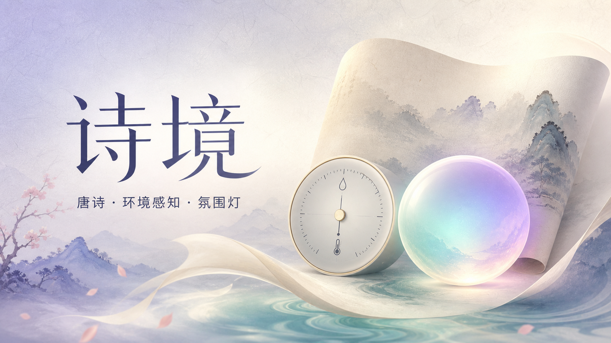

即時環境感知
透過 WebSerial 連接 micro:bit，接收溫度、濕度與震動資料。Live temperature, humidity and motion data through WebSerial.
Project 03 · AI × IoT × Tang Poetry
Tang Poetry Ambient Intelligence
以 micro:bit 感知環境，讓人工智慧從《唐詩三百首》中回應當下。 An ambient AI experience that connects live sensor data with a curated collection of classical Tang poetry.

專案把實體環境、經典文本與生成式人工智慧連成一個可互動的文化科技體驗。 The project brings physical sensing, classical literature and generative AI into one interactive cultural experience.
透過 WebSerial 連接 micro:bit，接收溫度、濕度與震動資料。Live temperature, humidity and motion data through WebSerial.
Qwen 先理解語意，再從限定的唐詩語料中檢索適合的作品。Qwen understands intent, then retrieves grounded poems from a curated corpus.
TTS 朗誦標題、作者及正文，並依詩意改變頁面氛圍。Speech reads each poem while the visual ambience responds to its mood.
Workers 提供 API 與部署，D1 保存近期感測紀錄。Workers powers the API and deployment; D1 stores recent sensor records.
感測資料與使用者問題分別進入系統；AI 只取得本次需要的少量詩詞檢索結果，再產生有來源的回應。 Sensor context and user intent are combined with a small set of retrieved poems before the AI creates a grounded response.
你可以直接體驗 AI 唐詩對話；若要使用實體感測功能，請以 Chrome 或 Edge 開啟，並連接已燒錄相容程式的 micro:bit。
Try the AI poetry conversation immediately. Hardware sensing requires Chrome or Edge and a compatible programmed micro:bit.